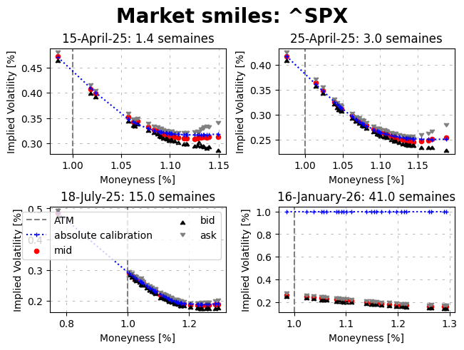

[2]:
from hestonpy.models.bates import Bates
from hestonpy.models.calibration.volatilitySmile import VolatilitySmile
from hestonpy.option.data import get_options_data, filter_data_for_maturity
import matplotlib.pyplot as plt
fontdict_title = {
'fontsize': 20,
'fontweight': 'bold'
}
from datetime import datetime
import numpy as np
Calibration of Bates models on market data#
We will calibrate our models on S&P smiles. You can also try with Apple, but there is less liquidity on the market, so less available maturities. Some parameters,
[3]:
symbol = '^SPX'
all_market_data, spot, maturities = get_options_data(symbol)
if symbol == '^SPX':
considered_maturities = [maturities[7], maturities[14], maturities[28], maturities[38]]
else:
considered_maturities = [maturities[1], maturities[3], maturities[8], maturities[14]]
r = 0.00
params = {
"vol_initial": 0.06,
"kappa": 1.25,
"theta": 0.06,
"drift_emm": 0.00,
"sigma": 0.6,
"rho": -0.8,
"lambda_jump": 1.0,
"mu_J": -0.1,
'sigma_J': 0.3
}
For each maturity/smile we filter the data (based on bid-ask spread, the moneyness etc.), then we calibrate with a local optimiser to initialise our global optimiser.
[4]:
fig, axs = plt.subplots(2, 2, layout="constrained")
fig.suptitle(f'Market smiles: {symbol}', **fontdict_title)
############################################################
##### Absolute
############################################################
for maturity, ax in zip(considered_maturities, axs.flatten()):
print("="*80)
print(maturity)
print("="*80,"\n")
####################################
### Getting and filtering data
####################################
full_market_data = filter_data_for_maturity(all_market_data, maturity)
time_to_maturity = full_market_data['Time to Maturity'].iloc[0]
strikes = full_market_data['Strike'].values
bid_prices = full_market_data["Bid"].values
ask_prices = full_market_data['Ask'].values
market_ivs = full_market_data['Implied Volatility'].values
market_prices = full_market_data['Call Price'].values
marketVolatilitySmile = VolatilitySmile(
strikes=strikes,
time_to_maturity=time_to_maturity,
atm=spot,
market_ivs=market_ivs,
r=r
)
market_data = marketVolatilitySmile.filters(full_market_data, select_mid_ivs=True)
####################################
### Calibration
####################################
bates = Bates(spot=spot, r=r, **params)
initial_guess = [params['kappa'], params['theta'], params['sigma'], params['rho'], params['lambda_jump'], params['mu_J'], params['sigma_J']]
initial_params = marketVolatilitySmile.calibration(
price_function=bates.call_price,
initial_guess=initial_guess,
guess_correlation_sign='negative',
speed='local',
)
initial_guess = [initial_params['kappa'], initial_params['theta'], initial_params['sigma'], initial_params['rho'],
initial_params['lambda_jump'], initial_params['mu_J'], initial_params['sigma_J']]
calibrated_params = marketVolatilitySmile.calibration(
price_function=bates.call_price,
guess_correlation_sign='negative',
initial_guess=initial_guess,
speed='global',
)
calibrated_prices = bates.call_price(
strike=marketVolatilitySmile.strikes, time_to_maturity=time_to_maturity, **calibrated_params
)
calibrated_ivs = marketVolatilitySmile.compute_smile(prices=calibrated_prices)
# Some plots
ask_ivs = market_data['Ask ivs'].values
bid_ivs = market_data['Bid ivs'].values
forward = marketVolatilitySmile.atm * np.exp(marketVolatilitySmile.r * marketVolatilitySmile.time_to_maturity)
if ax == axs.flatten()[-2]:
ax.axvline(1, linestyle="--", color="gray", label="ATM")
ax.plot(marketVolatilitySmile.strikes / forward, calibrated_ivs, label="absolute calibration", marker='+', color='blue', linestyle="dotted", markersize=4)
ax.scatter(marketVolatilitySmile.strikes / forward, marketVolatilitySmile.market_ivs, label="mid", marker='o', color='red', s=20)
ax.scatter(marketVolatilitySmile.strikes / forward, bid_ivs, label="bid", marker=6, color='black', s=20)
ax.scatter(marketVolatilitySmile.strikes / forward, ask_ivs, label="ask", marker=7, color='gray', s=20)
ax.legend(loc='upper right', ncol=2, alignment='left')
else:
ax.axvline(1, linestyle="--", color="gray")
ax.plot(marketVolatilitySmile.strikes / forward, calibrated_ivs, marker='+', color='blue', linestyle="dotted", markersize=4)
ax.scatter(marketVolatilitySmile.strikes / forward, marketVolatilitySmile.market_ivs, marker='o', color='red', s=20)
ax.scatter(marketVolatilitySmile.strikes / forward, bid_ivs, marker=6, color='black', s=20)
ax.scatter(marketVolatilitySmile.strikes / forward, ask_ivs, marker=7, color='gray', s=20)
ax.set_xlabel("Moneyness [%]")
ax.set_ylabel("Implied Volatility [%]")
date = datetime.strptime(maturity, '%Y-%m-%d').date().strftime("%d-%B-%y")
title = f"{date}: {marketVolatilitySmile.time_to_maturity * 252 / 5:.1f} semaines"
ax.set_title(title)
ax.grid(visible=True, which="major", linestyle="--", dashes=(5, 10), color="gray", linewidth=0.5, alpha=0.8)
plt.show()
================================================================================
2025-04-15
================================================================================
Calibrated parameters:
v0=0.223 | kappa=10.000 | theta=0.337 | sigma=4.583 | rho=-0.784 | lambda_jump=0.010 | mu_J=-0.042 | sigma_J=0.050
at minimum 0.182654 accepted 1
Parameters: kappa=10.000 | theta=0.337 | sigma=4.583 | rho=-0.784 | lambda_jump=0.010 | mu_J=-0.042 | sigma_J=0.050
at minimum 0.146750 accepted 1
Parameters: kappa=10.000 | theta=0.001 | sigma=3.544 | rho=-0.738 | lambda_jump=0.367 | mu_J=-0.500 | sigma_J=0.050
at minimum 0.150792 accepted 1
Parameters: kappa=10.000 | theta=0.002 | sigma=3.536 | rho=-0.739 | lambda_jump=0.434 | mu_J=-0.421 | sigma_J=0.155
at minimum 0.146750 accepted 1
Parameters: kappa=10.000 | theta=0.001 | sigma=3.544 | rho=-0.738 | lambda_jump=0.367 | mu_J=-0.500 | sigma_J=0.050
at minimum 0.151485 accepted 1
Parameters: kappa=10.000 | theta=0.008 | sigma=3.621 | rho=-0.735 | lambda_jump=0.371 | mu_J=-0.500 | sigma_J=0.058
at minimum 0.146750 accepted 1
Parameters: kappa=10.000 | theta=0.001 | sigma=3.544 | rho=-0.738 | lambda_jump=0.367 | mu_J=-0.500 | sigma_J=0.050
at minimum 0.146750 accepted 1
Parameters: kappa=10.000 | theta=0.001 | sigma=3.544 | rho=-0.738 | lambda_jump=0.367 | mu_J=-0.500 | sigma_J=0.050
at minimum 0.146750 accepted 1
Parameters: kappa=10.000 | theta=0.001 | sigma=3.544 | rho=-0.738 | lambda_jump=0.367 | mu_J=-0.500 | sigma_J=0.050
at minimum 0.211669 accepted 1
Parameters: kappa=0.001 | theta=2.360 | sigma=3.705 | rho=-0.776 | lambda_jump=0.086 | mu_J=-0.500 | sigma_J=0.050
at minimum 0.211667 accepted 1
Parameters: kappa=0.001 | theta=2.179 | sigma=3.705 | rho=-0.776 | lambda_jump=0.086 | mu_J=-0.500 | sigma_J=0.050
at minimum 0.211671 accepted 1
Parameters: kappa=0.001 | theta=2.483 | sigma=3.705 | rho=-0.776 | lambda_jump=0.086 | mu_J=-0.500 | sigma_J=0.050
['requested number of basinhopping iterations completed successfully'] True
Calibrated parameters:
v0=0.223 | kappa=10.000 | theta=0.001 | sigma=3.544 | rho=-0.738 | lambda_jump=0.367 | mu_J=-0.500 | sigma_J=0.050
================================================================================
2025-04-25
================================================================================
Calibrated parameters:
v0=0.132 | kappa=3.190 | theta=0.001 | sigma=1.861 | rho=-0.757 | lambda_jump=0.453 | mu_J=-0.493 | sigma_J=0.050
at minimum 0.227626 accepted 1
Parameters: kappa=10.000 | theta=0.001 | sigma=1.817 | rho=-0.704 | lambda_jump=1.068 | mu_J=-0.304 | sigma_J=0.050
at minimum 0.227626 accepted 1
Parameters: kappa=10.000 | theta=0.001 | sigma=1.817 | rho=-0.704 | lambda_jump=1.068 | mu_J=-0.304 | sigma_J=0.050
at minimum 0.228971 accepted 1
Parameters: kappa=9.239 | theta=0.001 | sigma=1.814 | rho=-0.710 | lambda_jump=0.975 | mu_J=-0.320 | sigma_J=0.050
at minimum 0.228551 accepted 1
Parameters: kappa=9.537 | theta=0.002 | sigma=1.822 | rho=-0.708 | lambda_jump=1.004 | mu_J=-0.315 | sigma_J=0.050
at minimum 0.227986 accepted 1
Parameters: kappa=9.799 | theta=0.001 | sigma=1.815 | rho=-0.705 | lambda_jump=1.039 | mu_J=-0.309 | sigma_J=0.054
at minimum 0.227626 accepted 1
Parameters: kappa=10.000 | theta=0.001 | sigma=1.817 | rho=-0.704 | lambda_jump=1.068 | mu_J=-0.304 | sigma_J=0.050
at minimum 0.227626 accepted 1
Parameters: kappa=10.000 | theta=0.001 | sigma=1.816 | rho=-0.704 | lambda_jump=1.067 | mu_J=-0.304 | sigma_J=0.050
['success condition satisfied'] True
Calibrated parameters:
v0=0.132 | kappa=10.000 | theta=0.001 | sigma=1.817 | rho=-0.704 | lambda_jump=1.068 | mu_J=-0.304 | sigma_J=0.050
================================================================================
2025-07-18
================================================================================
/home/theo/Documents/packages/hestonpy/src/hestonpy/models/blackScholes.py:140: RuntimeWarning: divide by zero encountered in divide
d1 = (np.log(spot / strike) + (r + 0.5 * volatility**2) * time_to_maturity) / (
Calibrated parameters:
v0=0.084 | kappa=1.733 | theta=0.382 | sigma=2.877 | rho=-0.866 | lambda_jump=1.918 | mu_J=-0.061 | sigma_J=0.050
at minimum 0.677344 accepted 1
Parameters: kappa=2.503 | theta=0.341 | sigma=3.738 | rho=-0.896 | lambda_jump=4.045 | mu_J=-0.039 | sigma_J=0.050
at minimum 0.620353 accepted 1
Parameters: kappa=1.891 | theta=0.427 | sigma=3.897 | rho=-0.914 | lambda_jump=5.059 | mu_J=-0.037 | sigma_J=0.050
at minimum 0.737909 accepted 1
Parameters: kappa=2.485 | theta=0.330 | sigma=3.583 | rho=-0.923 | lambda_jump=6.253 | mu_J=-0.001 | sigma_J=0.050
at minimum 1.516186 accepted 1
Parameters: kappa=1.980 | theta=0.388 | sigma=3.353 | rho=-0.929 | lambda_jump=5.722 | mu_J=-0.017 | sigma_J=0.050
['success condition satisfied'] True
Calibrated parameters:
v0=0.084 | kappa=1.891 | theta=0.427 | sigma=3.897 | rho=-0.914 | lambda_jump=5.059 | mu_J=-0.037 | sigma_J=0.050
================================================================================
2026-01-16
================================================================================
Calibrated parameters:
v0=0.070 | kappa=0.697 | theta=0.034 | sigma=2.990 | rho=-0.889 | lambda_jump=0.562 | mu_J=0.166 | sigma_J=0.050
at minimum nan accepted 1
Parameters: kappa=0.697 | theta=0.034 | sigma=2.990 | rho=-0.889 | lambda_jump=0.562 | mu_J=0.166 | sigma_J=0.050
at minimum 8681.453210 accepted 1
Parameters: kappa=3.563 | theta=1.040 | sigma=1.937 | rho=-0.647 | lambda_jump=3.544 | mu_J=0.235 | sigma_J=0.468
at minimum nan accepted 1
Parameters: kappa=3.078 | theta=1.398 | sigma=1.808 | rho=-0.547 | lambda_jump=2.498 | mu_J=0.203 | sigma_J=0.335
at minimum nan accepted 1
Parameters: kappa=3.326 | theta=1.664 | sigma=1.637 | rho=-0.580 | lambda_jump=2.047 | mu_J=0.227 | sigma_J=0.255
at minimum nan accepted 1
Parameters: kappa=3.055 | theta=1.871 | sigma=1.677 | rho=-0.782 | lambda_jump=1.738 | mu_J=0.265 | sigma_J=0.274
at minimum 8681.453210 accepted 1
Parameters: kappa=0.001 | theta=1.535 | sigma=2.932 | rho=-0.489 | lambda_jump=5.120 | mu_J=-0.500 | sigma_J=0.050
['success condition satisfied'] False
Calibrated parameters:
v0=0.070 | kappa=0.697 | theta=0.034 | sigma=2.990 | rho=-0.889 | lambda_jump=0.562 | mu_J=0.166 | sigma_J=0.050
/home/theo/Documents/packages/hestonpy/src/hestonpy/models/bates.py:271: RuntimeWarning: overflow encountered in exp
(bj - rho * sigma * u * 1j + dj(u)) * tau - 2 * np.log((1 - gj(u) * np.exp(dj(u) * tau)) / (1 - gj(u)))
/home/theo/Documents/packages/hestonpy/src/hestonpy/models/bates.py:271: RuntimeWarning: invalid value encountered in scalar multiply
(bj - rho * sigma * u * 1j + dj(u)) * tau - 2 * np.log((1 - gj(u) * np.exp(dj(u) * tau)) / (1 - gj(u)))
/home/theo/Documents/packages/hestonpy/src/hestonpy/models/bates.py:273: RuntimeWarning: overflow encountered in exp
Dj = lambda tau, u: (bj - rho * sigma * u * 1j + dj(u)) / sigma**2 * (1 - np.exp(dj(u) * tau)) / (1 - gj(u) * np.exp(dj(u) * tau))
/home/theo/Documents/packages/hestonpy/src/hestonpy/models/bates.py:273: RuntimeWarning: invalid value encountered in scalar multiply
Dj = lambda tau, u: (bj - rho * sigma * u * 1j + dj(u)) / sigma**2 * (1 - np.exp(dj(u) * tau)) / (1 - gj(u) * np.exp(dj(u) * tau))
/home/theo/Documents/packages/hestonpy/src/hestonpy/models/bates.py:273: RuntimeWarning: invalid value encountered in scalar divide
Dj = lambda tau, u: (bj - rho * sigma * u * 1j + dj(u)) / sigma**2 * (1 - np.exp(dj(u) * tau)) / (1 - gj(u) * np.exp(dj(u) * tau))
